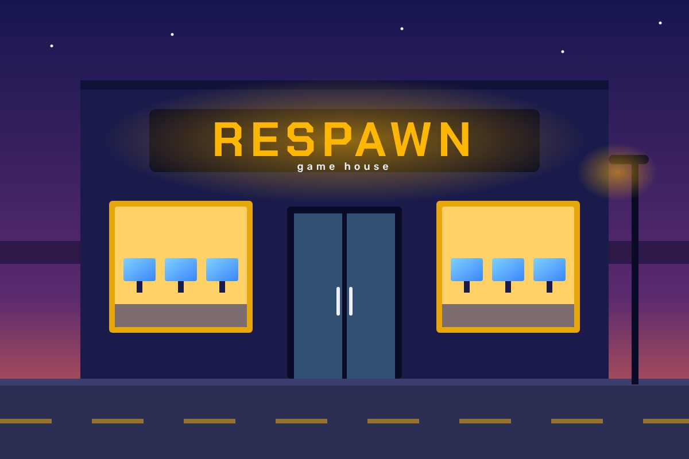

Missão
Oferecer um espaço acessível, seguro e bem equipado para jogar, aprender e competir em grupo.
Uma LAN house que cresceu junto com a galera da zona leste.
A Respawn abriu em março de 2021 numa sala pequena da Rua dos Jogadores, com 8 computadores e uma ideia simples: um lugar pra jogar junto, perto de casa, sem precisar ter um PC caro.
Os fundadores, Lívia Ramos e Diego Okabe, passaram a adolescência nas LAN houses do Tatuapé. Queriam trazer de volta aquele clima de chamar o amigo da cadeira do lado, só que com máquinas atuais, internet de fibra e um lugar limpo e seguro pra todas as idades.
Hoje são 20 PCs, 4 salas de console, 2 áreas de realidade virtual, uma lanchonete e um palco onde acontece pelo menos um torneio por semana.

Oferecer um espaço acessível, seguro e bem equipado para jogar, aprender e competir em grupo.
Ser o ponto de encontro de quem joga na zona leste e revelar talentos para o cenário competitivo.
Abertura com 8 computadores e uma TV com console.
Mudança para o prédio atual e inauguração das salas de console.
Primeira Copa Leste, com 6 times inscritos.
Chegada da realidade virtual e da Lanchonete Checkpoint.
Palco com telão e transmissão ao vivo dos torneios.
Salão PC ampliado para 20 estações.
Sócia, gestão e eventos
Cuida das parcerias, das festas de aniversário e do calendário de torneios.
Sócio, infraestrutura
Monta, atualiza e conserta as máquinas. Se a internet cair, ele já está resolvendo.
Organização de torneios
Ex-jogadora semiprofissional, monta os chaveamentos e narra as finais no palco.
Atendimento e lanchonete
Faz seu cadastro, libera a estação e prepara o melhor misto-quente da zona leste.